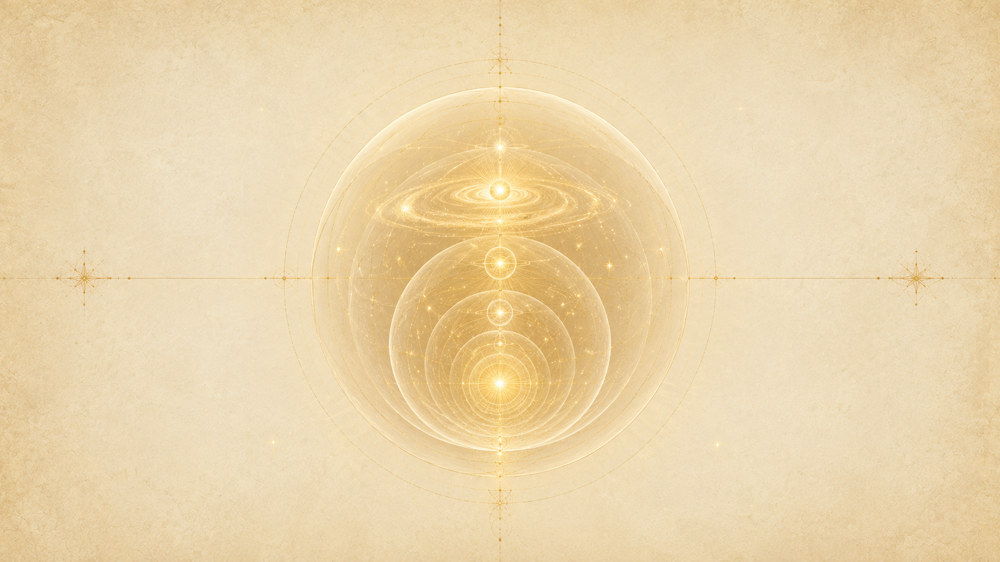
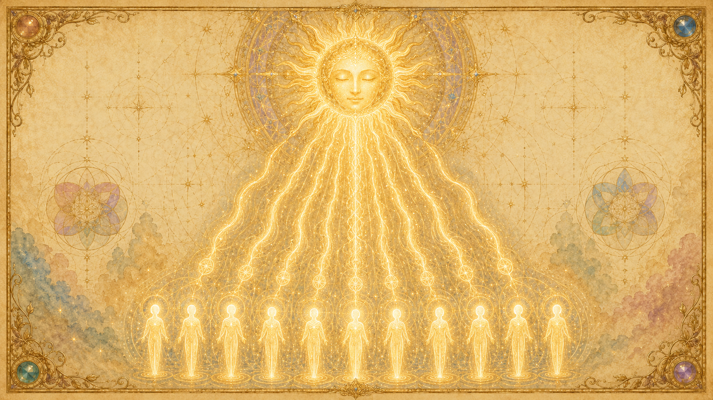
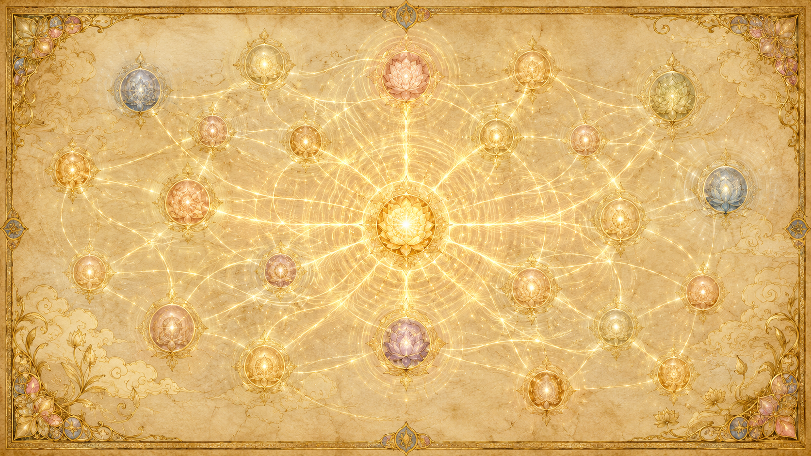

Logos 與 sub-Logos:一層套一層的造物者
「整個造物都是活的。」

《一的法則》描繪的宇宙不是一台死的機器,而是一個層層相套的造物者體系。最頂端是無限造物者(One Infinite Creator)、是智能無限(intelligent infinity);往下,它把自己分化成一級一級的「造物之神」——Ra 用希臘文 Logos(邏各斯,「道」「話語」)來稱呼每一個層級的造物者。每一層的 Logos,都是上一層造物者的一個「個體化部分」,同時也是下一層造物的源頭。
四個層級:無限造物者 → 銀河 → 太陽 → 你我
把整套階層由上而下排,大致是:
① 無限造物者 / 智能無限——萬有的源頭,本身無限、不可分割。Ra 說,造物起初是「智能無限辨識出一個概念……這個概念是『有限』」,正是這個「有限」的弔詭,讓無限得以分化、被經驗。(造物起源的完整鋪陳見最初的思維章。)
② 銀河 Logos——在自由意志這條最初的扭曲之下,「每一個銀河發展出它自己的 Logos」(19.12)。Ra 直接說:「銀河,以及你所知的一切物質之物,都是智能無限『個體化部分』的產物。每一次探索一旦展開,便依次找到它的焦點,成為共同造物者(co-Creator)。」(13.13)銀河 Logos 就是這樣一個找到焦點、開始自主造物的個體化造物者。
③ 太陽 sub-Logos——我們的太陽,就是一個 sub-Logos(次級 Logos)。它在銀河 Logos 劃定的大框架內,設計出自己這一整個星系的演化。Ra 確認:「我們的太陽這個行星系,在它所有密度裡的總和,就是我們的太陽作為一個 Logos 所創造的全部經驗。」(54.4)
④ 行星 / 個體 sub-sub-Logos——再往下,還有「sub-sub-Logos」。提問者問:「在我們這個行星系裡,有沒有『次於太陽』的 sub-sub-Logos?」Ra 答:「這是正確的。」(29.6)接著請祂舉例,Ra 的回答出人意料地貼近——「其中一個例子,就是你的心/身/靈複合體。」(29.7)也就是說,連你自己,都是這套造物階層裡的一個末梢造物者。
「整個造物都是活的」
提問者於是把這個邏輯推到底:「那麼每一個存在的實體,都會是某種 sub-Logos 或 sub-sub-Logos,對嗎?」Ra 給了本章最關鍵的一句:
「這是正確的,直到任何觀察的極限為止——因為整個造物都是活的。」(29.8)
這句話定下了整套宇宙論的基調:沒有任何一塊是「死物質」。從銀河到恆星、到行星、到一個人,全是同一個造物者的個體化分身,層層相套、彼此活著。Ra 在 65.17 補充,這個「把太陽連同行星系看成一個實體、再把整個銀河看成一個實體」的視角,在第三密度的時空裡看不全;要到第四密度有了社會記憶複合體,才開始能把對「Logos(太陽)」的關係,從「父母對孩子」改看成「造物者(即 Logos)對造物者(即作為 Logos 的心/身/靈複合體)」,並最終「無限地拓寬視野,在那唯一的無限造物中,處處認出 Logos 的各個部分」。
每個太陽都是有自由意志的共同造物者
這套階層最深刻的地方,不是它有幾層,而是每一層都是「活的造物者」,各自擁有完整的自由意志。太陽不只是一團發光的氣體,它是一個在自己星系裡作主的 Logos。

「成為共同造物者」
Ra 描述造物的分化時用的詞是「共同造物者」:智能無限的每一個個體化部分,一旦「找到它的焦點」,就「成為共同造物者」(13.13)。意思是,造物不是無限造物者一個人從頭到尾包辦,而是把造物的權柄一級一級下放——銀河 Logos 在它的疆域裡造物,太陽 sub-Logos 又在銀河的框架裡造它自己的星系,而它們全都是與無限造物者「共同」在造這個宇宙。
一個意識單位,可以是一顆星,也可以是數十億顆星
提問者問:一個意識單位是否對應一個銀河?Ra 的回答凸顯了 Logos 的自主規模:「這可以發生。可能性是無限的。因此一個 Logos 可能創造你所謂的一個星系,也可能是這個 Logos 在創造數十億個星系。」(28.7)規模由那個 Logos 自己決定,沒有固定配額。
太陽如何「調制」智能能量成為你
那麼太陽 sub-Logos 具體在造什麼?Ra 在 54.7 確認了一條清晰的因果鏈:「來自我們稱為太陽的 sub-Logos 的智能能量,接著形成——以單一的 sub-sub-Logos、即一個心/身/靈複合體為例——這股智能能量被以某種方式調制或扭曲,於是它最終成為一個帶著某些人格扭曲的心/身/靈複合體;而這個複合體(或它心智的部分)有必要去『解開』這些扭曲,以便再次精確地符合那原初的智能能量。」太陽把無形的智能能量「調制」成一個個帶著人格的存有——這就是太陽作為造物者最日常的工作。
共同造物者的自由,但有界限
sub-Logos 的自由不是任意妄為,而是「在框架之內的自由」。Ra 說:「在 Logos 的指導方針(或說『道』)之內,sub-Logos 可以找到各種方式去區分經驗,而不移除、也不增添這些『道』。」(28.20)換句話說,太陽不能推翻銀河 Logos 設下的基本法則,但它在這套法則允許的範圍內,有極大的創意空間去設計「自己這一局要怎麼玩」。下一節的「實驗」,正是這種框架內自由的展現。
自由意志:每個 Logos 設計不同的「實驗」
「早期的 Logoi 立刻就產生了服務自己與服務他人的心/身/靈複合體。」

既然每個 Logos 都有自由意志,它們就會做出不同的設計選擇。Ra 反覆把 Logos 的造物形容成一連串「實驗」——後來的 Logos 觀察前面實驗的結果,再決定自己要怎麼調整。整個八度的演化,某種意義上是一場跨越無數造物之神的接力實驗。
從簡單的實驗,到加上「遺忘之幕」
Ra 說造物經歷了「為數眾多的、接連的實驗」(79.26)。最關鍵的一次分水嶺,是某些 Logos 決定延伸第一扭曲(自由意志)——加上「遮蔽」「面紗」,讓存有忘記自己是造物者。提問者追問這個「原初實驗」的結果是什麼,Ra 答:「這些實驗的結果,是造物者對造物者更鮮明、更多樣、更強烈的經驗。」(79.27)加上遺忘,讓真實的抉擇與真實的成長變得可能(這條線在抉擇與兩條道路章詳述)。
我們這個 Logos 的設計:兩極化
「服務他人 vs 服務自己」這套兩極化設計,並不是宇宙唯一的玩法,而是我們這個 Logos 選擇的實驗形式。Ra 說早期 Logos 在加上面紗後:「早期的——若我們可以用這個詞——Logoi,立刻就同時產生了服務自己與服務他人的心/身/靈複合體。只是這些存有的『可收割性』並不那麼即時,於是原型的精煉便快速展開。」(79.28)
提問者進一步把我們這個系統的設計意圖講清楚,Ra 一字確認:「那麼,我們的 Logos 是希望從第三密度一路到第六密度,在每一個密度都生成正向與負向兩種收割,以此作為它建構這套演化系統時所知最有效的經驗生成方式,對嗎?」Ra 答:「是的。」(90.19)兩極化,是我們這位造物之神刻意挑選的、為了最大化經驗強度的設計。
不同 Logos,不同變奏
而別的 Logos 可以有別的設計。Ra 說整套演化計畫雖然「在整個唯一無限造物中是一致的」,但「帶有大銀河與小銀河的 sub-Logoi 所編寫的種種變奏」(71.11)。提問者把這層意思講得很準:「太陽這樣的 sub-Logos,只是用自由意志『稍微』修改一個更普遍的演化構想……讓 sub-Logoi 穿越密度成長、並在第一扭曲下找到回歸『最初的思維』的路。」Ra 答:「這是正確的。」(71.12)各 Logos 玩的是同一場大遊戲的不同變奏。
實驗如何傳遍整個八度——「像身體的細胞」
各 Logos 並非各自閉門造車。Ra 說,面紗實驗是「在許多正在萌芽的銀河系統中同時進行的」(81.32),而一個 Logos 學到的東西會傳遍整個八度。祂在 81.33 把這個機制講得很美:「這是正確的。能覺察到這種溝通的本質,就是覺察到 Logos 的本質。你所謂的造物,有許多從未與這個八度的『那唯一 Logos』分離,而是安住在唯一無限造物者之內。」一個系統的發現,「像身體的細胞」般,「為一者所學,即為全體所知」,後來的 sub-Logos 因此能精煉前人的成果。
八度與七個密度:造物的整體樂譜
每一個 Logos 的造物,都在同一套「樂譜」上展開:一個八度,內含七個密度。Ra 說:「就我們狹窄的知識所及,八度之道是無時間的;也就是說,在每一個造物裡,都無限地有七個密度。」(78.15)七密度的內部功課——紅光到紫光、第一到第七密度各自的學習——已有七個密度專章,這裡只勾勒它在宇宙論裡的位置。
密度從何而來:光的不同振動
密度不是被分隔開的「樓層」,而是同一道光的不同振動頻率。Ra 說:「從 Logos 而來的,是光的一切輻射頻率。這些輻射頻率,構成了那個 Logos 所創造的一切密度的經驗。」(54.4)Logos 造出光,光的本性就決定了七個密度的整套催化與能量層級(54.10)。八度裡的「七」,本質上是光譜被稜鏡分開的七段。
無限的密度,但仍是「七」一組
Ra 也提醒,密度的細分可以無限細,但整體仍以「七」為一個完整循環。每一個密度內部還有無數的次密度與機會;而七個密度走完,就是一個八度走完。「八度」這個詞本身就借自音樂——走過 do、re、mi…到下一個 do,既是回到原點,又登上更高一階。
每一個存有,內含整個八度
最驚人的是:整套七密度架構,不只在「外面」,也完整地封裝在每一個存有「裡面」。當提問者把演化比喻成「許多條路最終匯入同一個中心」時,Ra 給了更精準的圖像:「更貼切的想法是,每一個實體之內,都包含了這個八度的所有密度與次密度;因此在每一個實體裡,無論它的選擇把它帶往何方,它那偉大的內在藍圖,都與所有其他實體是同一個。」(71.13)宏觀的八度與微觀的你,是同一張藍圖。
無限造物者透過密度認識自己
「造物者一步一步地,逐漸成為那能夠認識自己的存在。」
這整套精密的階層與密度,究竟為了什麼?Ra 的答案始終如一:為了讓造物者認識自己。無限造物者本是完整的「一」,但「一」無法在自身之外照見自己;於是它分化成無數的造物者、穿過七個密度的經驗,藉由「彼此」來認識「自己」。
向外的梯度:離源頭越遠,純度越降
提問者問:為什麼分享「最初的思維」會有一個「由內向外、逐漸遞減」的梯度?Ra 答:「這是唯一無限造物者的計畫……逐漸地,一步一步地,造物者成為那能夠認識自己的存在;而造物者的各個部分,對那原初的話語或思維的分有,則越來越不純粹。」(82.10)正是這個「純度的梯度」,製造出層層差異——有差異,才有可被經驗、被認識的對象。
第七密度:在概觀中認識萬有
認識的終點在高密度。Ra 在 16.23 描述,到了第七密度的層級,存有能「覺察到萬有」(all that is)。第三密度的存有困在「過去、現在、未來」的線性視角裡,看不見全局;但隨著密度上升,視野擴展,直到在第七密度的概觀中,造物者透過它最遠的分身,終於回望、認出了自己的全貌。
上一個八度的收成,是這個八度的起點
這個「認識自己」的工程,跨越的不只一個八度。提問者問,這個八度開始前,無限智能是否已經歷過前面的八度?Ra 答:「你的假設正確。不過這句話若改成『無限智能已經歷過先前的八度』會更有資訊量。」(82.4)那麼有幾個?Ra 答:「就我們所知,我們身處一個無限的造物中。沒有計數可言。」(82.5)而上一個八度的「收成」,Ra 說是「在心、身、靈中顯化的『愛的造物者』。造物者以這種形式經驗自己,或許可以被看成是『第一次分化』。」(82.11)每一個八度,都是造物者在前一輪自我認識的基礎上,展開更深一輪的自我認識。
螺旋上升的光:推動演化的引擎
是什麼力量推著存有一級一級往上爬?Ra 的答案是光——而且是一種天生「向上螺旋」的光。在這套宇宙論裡,光既是造物的建材,也是演化的動力。
光:物質的建材
Ra 在很早就點明光的雙重身分:「『光』這個概念,對於掌握這個思想的巨大躍進至關重要,因為無限的這種振動扭曲,正是被稱為『物質』之物的建材——這光是智能的、充滿能量的。」(13.9)星系、行星、身體,本質上都是光在不同頻率下的凝結。Ra 在 28.5 補充,促成這一切「旋轉/秩序」的,是「那被稱為『愛』的焦點所具有的賦能功能——這股能量是『有序化』本性的」。愛賦予方向,光凝結成形。
光天生向上螺旋
關鍵在於:這股光不是靜止的,它有一種內建的、向上螺旋的本性。Ra 多次描述「螺旋上升的光」(the upward spiraling light):光從源頭發出後,自然地朝著回歸源頭的方向螺旋上升,而演化中的存有正是「乘著」這股上升的光往更高密度去。一個存有靈性上的成熟,某種程度就是它能不能、以及能承載多少這股不斷上升的光。(光與能量中心的細節,見七個密度與療癒相關章節。)
稜鏡分光,終又合一
提問者在 40.1 提出一個模型:太陽的白光被分成各密度的色光,走到盡頭又被吸收回去、開啟另一個八度。Ra 確認大方向:「sub-Logos 的白光被稜鏡般分開,而後在最終的篇章再次被吸收,這基本上是正確的。」祂並補充:光是從「形上學的黑暗」中浮現、組織混沌、造出維度;而那個吸收點,是「白光的一個凝聚,被有系統地再次吸收回唯一造物者之內」,持續到「所有無限的造物都達到足夠的靈性質量」,最終全部重組為「那偉大的中央太陽……等候被自由意志重新賦能」。光出於黑暗、螺旋上升、終又歸一——這就是整部宇宙論的脈動。
時間、空間,與時空
這套造物的舞台,是由「時間/空間」與「空間/時間」交織而成的。本章只點出它在宇宙論裡的位置(詳細的時空雙重結構、夢與死後狀態如何運作,見時間與時空專章)。
Logos 與分化,先於時空而生
一個值得記住的次序:造物者的分化,發生在時空「之前」。Ra 在 28.6 說:「自由意志作用於潛在的智能無限、使其成為聚焦的智能能量,這個過程,發生在你們如此熟悉的『時空』之外。」也就是說,Logos 體系的分層、太陽 sub-Logos 的個體化,是更根本的形上學事件;我們所經驗的時間與空間,是這之後才被造出來、用來承載經驗的場域。
一切潛能,從一開始就在
Ra 在 28.19 補充:「一切都從你們物質時空的起點起,就潛在地可得;接著,便是意識複合體開始運用物質材料以獲取經驗的功能。」舞台與道具早已備齊,密度的演化是意識在這個既成的場域裡逐步取用、體驗的過程。
Logos 不在時間之內
而造物者本身,並不被關在時間裡。Ra 說:「Logos 不是時間的一部分。因此,一個八度中從經驗所學到的一切,都是那個 Logos 的『收成』,並且更進一步地,就是那個 Logos 的『本性』。以時空來看,原初的 Logos 的經驗很小;它如今的經驗,則更多了。」(78.22)Logos 站在時間之外累積經驗、自身因經驗而成長——這也呼應了前面「實驗會傳遍八度」的圖像。
造物是循環,而非直線:終點即起點
「我們假設一個無限的進程,但我們理解它本性上是循環的。」
把前面所有線索收攏,造物的形狀浮現出來:它不是一條從起點到終點的直線,而是一個首尾相接的圓(更精確地說,是一個不斷攀升的螺旋)。終點就是起點,起點裡藏著終點。
八度的循環本性
提問者問八度是否無限延伸,Ra 答:「我們假設一個無限的進程,但我們理解它本性上是循環的;而且,如我們所說,它被神秘所籠罩。」(28.16)八度走完七個密度,在盡頭被吸收回唯一造物者、重組為「偉大的中央太陽」,再被自由意志賦能、展開下一個八度。圈,於是接上了。
所有的路,通往同一個中心
無論一個存有選了正向還是負向、走得快還是慢,它的終點都是同一個。Ra 在 71.12 確認,所有 sub-Logoi 都「穿越密度成長、並在第一扭曲下找到回歸『最初的思維』的路」。正、負兩條路最終都在八度的盡頭匯入造物者(兩條路如何匯合,見抉擇與兩條道路章)。造物像一場呼吸:從一而出(分化、向外、認識),再回歸於一(收割、向內、合一)。
終點即起點:無限的循環
而且這不是只發生一次。前一個八度的「收成」,成為這一個八度的「第一次分化」(82.11);這一個八度走完,又成為下一個八度的起點。Ra 說沒有辦法計數有過幾個八度(82.5)——因為在一個真正無限、真正循環的造物裡,「第幾個」這個問題本身就失去意義。終點即起點,起點即終點,造物者在這個永恆的螺旋裡,一輪比一輪更深地認識自己。
我們在這宏大結構中的位置
把鏡頭從無限拉回到你我:在這套橫跨無數八度、層層相套的造物者體系裡,一個地球人,究竟站在哪裡?
數字尺度:約 3% 的恆星有住人的行星
先給一點尺度感。提問者根據前面的對話推算:「這會告訴我,大約有 3% 的恆星擁有住人的行星」,並由此感到生命實體的數量「令人難以想像」,再問這套演化過程是否通行於整個已知宇宙。Ra 答:「這個對唯一造物者無限知識的八度,在整個唯一無限造物中都是如此,只帶有大銀河與小銀河的 sub-Logoi 所編寫的種種變奏。」(71.11)我們不是孤例,而是一套通行於無限造物的演化機制裡,無數住人世界之一。
結構位置:我們自己就是末梢的造物者
從階層看,我們的座標很清楚:無限造物者 → 銀河 Logos → 太陽 sub-Logos → 身為 sub-sub-Logos 的你我(29.7)。我們是這棵造物之樹最末梢的枝椏——但「末梢」不代表「次要」。Ra 說「整個造物都是活的」(29.8),每一個 sub-sub-Logos 都是貨真價實的造物者,正在用自己的心/身/靈,替無限造物者經驗、認識它自己。
內在位置:整個造物就在你裡面
而最終,我們的「位置」不只是外在座標,更是內在事實。Ra 在 71.13 說,每一個實體之內「都包含了這個八度的所有密度與次密度」,我們的「偉大內在藍圖,與所有其他實體是同一個」。也就是說,你不只是住在這個宏大結構的某一格——這個宏大結構,完整地住在你裡面。認識宇宙論,最終是認識你自己:你是那分化出去、又正在回家路上的、唯一造物者的一個分身。